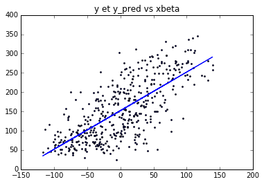
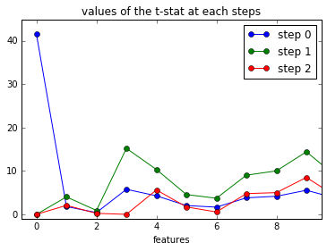
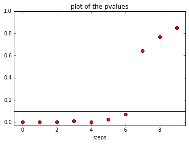

import numpy as np
from scipy.stats import norm
from sklearn import datasets
%matplotlib inline
import matplotlib
import matplotlib.pyplot as plt
from sklearn import linear_model
import os
cwd = os.getcwd()
dirname = "../srcimages/"
if not os.path.exists(dirname):
os.mkdir(dirname)
imageformat = '.pdf'
def my_saving_display(fig, dirname, filename, imageformat):
""""saving faster"""
dirname + filename + imageformat
image_name = dirname + filename + imageformat
fig.savefig(image_name)Importation des packets.
Importation de la base de données ‘’diabetes’’.
datasets.load_diabetes()
diabetes = datasets.load_diabetes()
diabetes_X = diabetes.data
diabetes_y = diabetes.targetLes variables sont standardisées de la façon suivante:
print(diabetes_X.sum(axis = 0))
print(np.dot(np.transpose(diabetes_X),diabetes_X))[ -1.60635394e-13 5.78287418e-14 -3.55604435e-13 5.66491298e-14
-3.90520949e-14 5.86544702e-14 -2.02199368e-13 1.66956726e-13
-1.69323756e-13 -1.50849385e-13]
[[ 1. 0.1737371 0.18508467 0.33542671 0.26006082 0.21924314
-0.07518097 0.2038409 0.27077678 0.30173101]
[ 0.1737371 1. 0.0881614 0.24101317 0.03527682 0.14263726
-0.37908963 0.33211509 0.14991756 0.20813322]
[ 0.18508467 0.0881614 1. 0.39541532 0.24977742 0.26116991
-0.36681098 0.4138066 0.44615865 0.38867999]
[ 0.33542671 0.24101317 0.39541532 1. 0.24246971 0.18555783
-0.17876121 0.25765337 0.39347814 0.39042938]
[ 0.26006082 0.03527682 0.24977742 0.24246971 1. 0.89666296
0.05151936 0.54220728 0.51550076 0.32571675]
[ 0.21924314 0.14263726 0.26116991 0.18555783 0.89666296 1.
-0.19645512 0.65981689 0.3183534 0.29060038]
[-0.07518097 -0.37908963 -0.36681098 -0.17876121 0.05151936 -0.19645512
1. -0.73849273 -0.398577 -0.2736973 ]
[ 0.2038409 0.33211509 0.4138066 0.25765337 0.54220728 0.65981689
-0.73849273 1. 0.61785739 0.41721211]
[ 0.27077678 0.14991756 0.44615865 0.39347814 0.51550076 0.3183534
-0.398577 0.61785739 1. 0.46467046]
[ 0.30173101 0.20813322 0.38867999 0.39042938 0.32571675 0.29060038
-0.2736973 0.41721211 0.46467046 1. ]]Regression avec sk learn
regr = linear_model.LinearRegression()
regr.fit(diabetes_X , diabetes_y)
print(regr.coef_)
print(regr.intercept_)[ -10.01219782 -239.81908937 519.83978679 324.39042769 -792.18416163
476.74583782 101.04457032 177.06417623 751.27932109 67.62538639]
152.133484163Premier graphe
ypred_tmp = np.dot(diabetes_X , regr.coef_ )
ypred = ypred_tmp + regr.intercept_
#ypred = regr.predict(diabetes_X)
plt.figure()
plt.plot(ypred_tmp , ypred)
plt.scatter(ypred_tmp , diabetes_y , s =3 )
plt.title("y et y_pred vs xbeta")
plt.show()
Méthode Forward : à chaque boucle sur k, on selectionne la variable avec la plus grande p-valeur
diabetes_X_aug = np.column_stack( (np.ones( (diabetes_X.shape[0], 1 )), diabetes_X ))
p = diabetes_X_aug.shape[1]
n = diabetes_X_aug.shape[0]
test = np.zeros((p,p))
pval_mem = np.zeros(p)
pval = np.zeros((p,p))
resids = diabetes_y
var_sel = []
var_remain = list(range(p))
in_test = []
regr = linear_model.LinearRegression(fit_intercept = False)
for k in range(p):
resids_mem = np.zeros((p,n))
for i in var_remain:
xtmp = diabetes_X_aug [:,[i]]
regr.fit(xtmp , resids)
#calcul de (x'x)
xx = np.sum( diabetes_X_aug [:,[i]] ** 2 )
resids_mem [i,:] = regr.predict(xtmp) - resids
sigma2_tmp = np.sum (resids_mem [i,:] ** 2) / xx
test[k,i] = np.sqrt(n) * np.abs(regr.coef_) / (np.sqrt( sigma2_tmp ))
pval[k,i] = 2 * (1 - norm.cdf(test[k,i]))
####separe en deux vecteurs la listes des variables séléctionnées et les autres
best_var = np.argmax(test[k,:])
var_sel.append(best_var)
resids = resids_mem[best_var,:]
pval_mem [k] = pval[k,best_var]
var_remain = np.setdiff1d(var_remain,var_sel)
Pour les 3 premières étapes de la méthode (k=0,1,2), on trace les valeurs de la statistique de test calculée, enregistrée dans la matrice test.
def foo(s1):
return "step %s" % s1
fig = plt.figure()
for k in range(3):
lab_tmp = foo(k)
plt.plot(np.arange(p),test[k,:], '-o',label = lab_tmp)
plt.axis(xmin = -.5,xmax = 9.5,ymin = -1)
plt.legend(loc=1)
plt.title("values of the t-stat at each steps")
plt.xlabel("features")
plt.show()
filename = 'forw_first_steps'
my_saving_display(fig, dirname, filename, imageformat)
On peut maintenant regarder, pour chaque étape, la pvaleurs associée à la variable séléctionnée. On voit que cette pvaleur grandie; et que si l’on se fixe un niveau de 0.1 pour le test, on rejette l’hypothèse nulle (H_0 : beta_k = 0) uniquement pour les 6 premières étapes.
fig2 = plt.figure()
for k in range(3):
plt.plot(np.arange(p),pval_mem, 'o')
plt.plot([-0.5,9.5],[.1,.1],color = "blue" )
plt.axis(xmin = -.5,xmax = 9.5,ymin = -.03)
plt.title("plot of the pvalues")
plt.xlabel("steps")
plt.show()
filename = 'pvalues'
my_saving_display(fig2, dirname, filename, imageformat)
En pratique cela signifie que notre méthode sélectionne les 7 variables suivantes (0 correspondant à l’intercept):
print("variables sélectionnées (dans l'ordre): " ,
np.array(var_sel)[pval_mem<.1])variables sélectionnées (dans l'ordre): [0 3 9 5 4 2 7]diabetes_X_aug = np.column_stack( (np.ones( (xtmp.shape[0], 1 )), diabetes_X ))